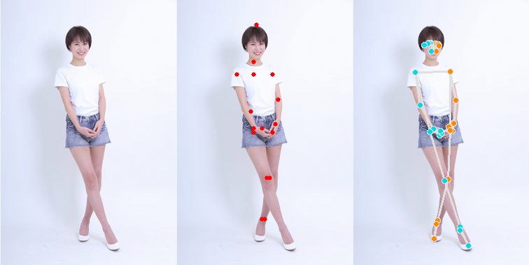
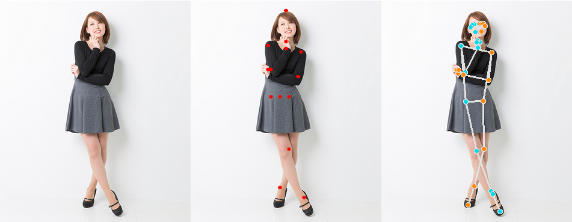
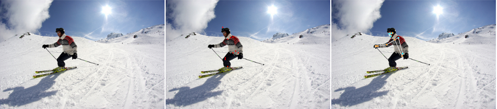
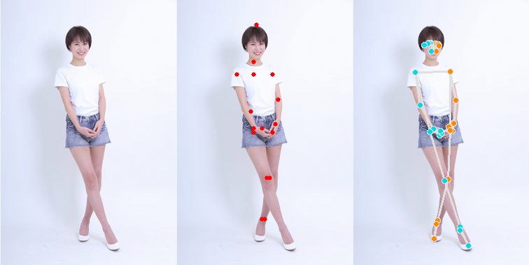
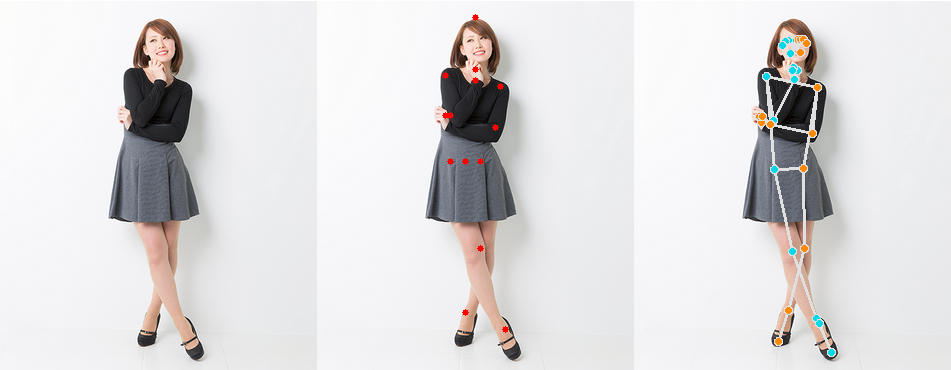
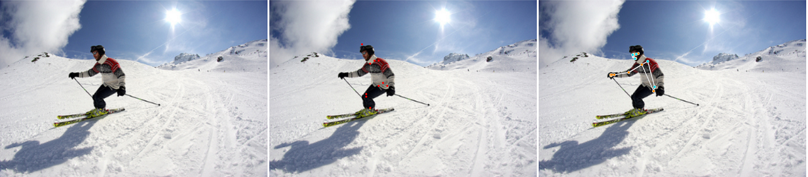

HRNETをチャネルプルーニング(下図の各板を薄くするイメージ)したもので
GPU無でも、そこそこの速度で動作します。

画像や映像の中の人の骨格を抽出するプログラムです。



HRNETをチャネルプルーニング(下図の各板を薄くするイメージ)したもので
GPU無でも、そこそこの速度で動作します。
| モデル | FPS (i7-7700@3.60GHz) |
|---|---|
| model_15.onnx | 約 9.0 |
pip install onnx2torch opencv-python
python PoseEstimation_from_camera.py
python PoseEstimation_from_images.py (人が写った画像へのワイルドカード)